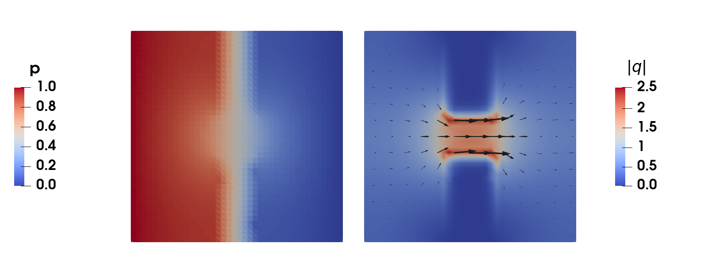
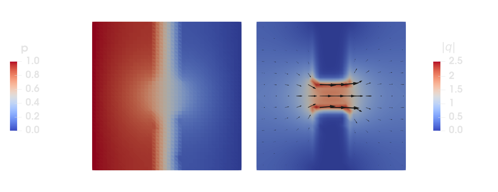
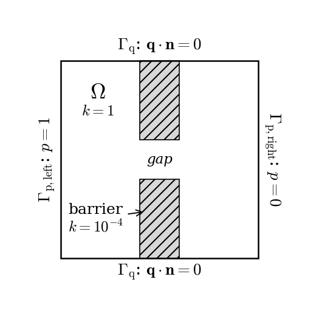
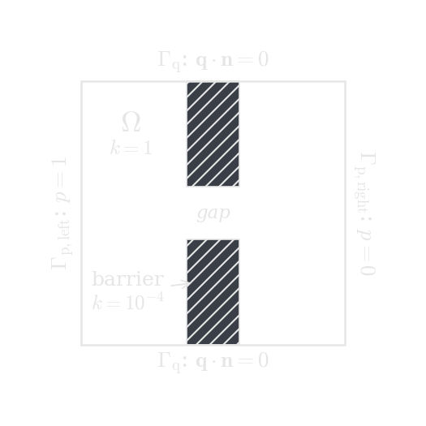

Darcy flow with H(div) elements


Figure 1: Pressure (left) and flux magnitude (right) for Darcy flow through a domain with an almost impermeable barrier: the flow is forced through the gap in the middle.
This tutorial is also available as a Jupyter notebook: darcy_flow.ipynb.
Introduction
In this tutorial we solve Darcy flow through a porous medium with an (almost) impermeable barrier, using the mixed form of the Poisson problem: instead of discretizing the pressure only, and computing the flux by differentiation afterwards, we treat the flux as an unknown field of its own. This requires a finite element space designed for fluxes — the flux should have a continuous normal component across element boundaries, but nothing more — which is exactly what the $H(\mathrm{div})$-conforming Raviart-Thomas elements provide.
The motivation for the mixed method is that it has a property that the standard (pressure-only) formulation lacks: the computed flux is locally conservative — what flows into any element flows out of it again, to machine precision, on any mesh. For applications where the flux is the quantity of interest (groundwater flow, reservoir simulation, heat conduction with sharp material contrasts, transport problems where the flux advects a species), this property is often essential. At the end of this tutorial we solve the same problem with the standard formulation and compare.
This tutorial teaches the following new concepts:
- Formulating and assembling a mixed problem with an $H(\mathrm{div})$ interpolation (
RaviartThomas) paired with a discontinuous pressure (DiscontinuousLagrange) - Prescribing the normal flux $\boldsymbol{q} \cdot \boldsymbol{n}$ on a boundary with
ProjectedDirichlet, since $H(\mathrm{div})$ interpolations have no nodal support points - Pressure boundary conditions that enter weakly through the flux equation
- Verifying local (element-wise) conservation of the computed flux
- Quantifying the normal-flux continuity across element facets using the
InterfaceIteratorandInterfaceValues
Strong form
Darcy's law relates the flux $\boldsymbol{q}$ to the pressure gradient through the permeability $k$, and mass conservation closes the system:
\[\begin{alignat*}{2} k^{-1} \boldsymbol{q} + \mathrm{grad}(p) &= \boldsymbol{0} \quad && \boldsymbol{x} \in \Omega \\ \mathrm{div}(\boldsymbol{q}) &= 0 \quad && \boldsymbol{x} \in \Omega \\ p &= p_\mathrm{D} \quad && \boldsymbol{x} \in \Gamma_\mathrm{p} \\ \boldsymbol{q} \cdot \boldsymbol{n} &= 0 \quad && \boldsymbol{x} \in \Gamma_\mathrm{q} \end{alignat*}\]
We consider a unit square where water is pushed from the left edge ($p = 1$ on $\Gamma_\mathrm{p,left}$) to the right edge ($p = 0$ on $\Gamma_\mathrm{p,right}$), while the top and bottom edges are impermeable ($\Gamma_\mathrm{q}$). In the middle of the domain sits a barrier with a permeability four orders of magnitude lower than the surrounding material, with a gap in the center — the flow is forced through this gap.


Figure 2: Geometry and boundary conditions: the pressure is prescribed on the left and right edges ($\Gamma_\mathrm{p}$), the top and bottom edges are impermeable ($\Gamma_\mathrm{q}$), and the flow must pass through the gap in the almost impermeable barrier.
Weak form
Multiplying Darcy's law with a (vector valued) test function $\delta\boldsymbol{q}$ and integrating the pressure term by parts gives
\[\int_\Omega k^{-1}\, \delta\boldsymbol{q} \cdot \boldsymbol{q}\, \mathrm{d}\Omega - \int_\Omega \mathrm{div}(\delta\boldsymbol{q})\, p\, \mathrm{d}\Omega = - \int_{\Gamma_\mathrm{p}} (\delta\boldsymbol{q} \cdot \boldsymbol{n})\, p_\mathrm{D}\, \mathrm{d}\Gamma\]
where the boundary integral vanished on $\Gamma_\mathrm{q}$ because the test functions satisfy $\delta\boldsymbol{q} \cdot \boldsymbol{n} = 0$ there. Note how the roles of the boundary conditions have been reversed compared to the standard Poisson problem: the pressure condition enters weakly (naturally) through the right hand side, while the flux condition is essential and is built into the trial and test spaces. The mass balance is tested with a scalar test function $\delta p$ (multiplied by $-1$ to obtain a symmetric system):
\[- \int_\Omega \delta p\, \mathrm{div}(\boldsymbol{q})\, \mathrm{d}\Omega = 0\]
The weak form also tells us which spaces the fields, and the corresponding test functions, live in. The only derivative that appears is the divergence of the flux, so $\boldsymbol{q}$ and $\delta\boldsymbol{q}$ must belong to $H(\mathrm{div})$ — the space of square-integrable vector fields with square-integrable divergence — here with $\boldsymbol{q} \cdot \boldsymbol{n} = 0$ on $\Gamma_\mathrm{q}$ built in. The pressure $p$ and its test function $\delta p$ are never differentiated, so they only need to be square-integrable: $p \in L^2$. Note what this does not require: membership in $H(\mathrm{div})$ needs only the normal component to be continuous across element boundaries (the tangential component may jump), and functions in $L^2$ need no continuity at all. The discrete spaces chosen next mirror exactly this regularity — and no more.
Choice of finite element spaces
The pair of spaces for $(\boldsymbol{q}, p)$ cannot be chosen freely — stability requires them to satisfy the LBB (inf-sup) condition, analogous to the situation in the incompressible elasticity tutorial. Here we use the lowest order stable pair: the flux is interpolated with RaviartThomas functions, which are associated with the element facets and have continuous normal components across them, and the pressure with element-wise constants (DiscontinuousLagrange of order 0). Higher order pairs follow the same pattern: RaviartThomas{RefTriangle, k}, or alternatively BrezziDouglasMarini{RefTriangle, k}, together with DiscontinuousLagrange{RefTriangle, k-1}. See [7] for an accessible introduction to mixed methods and [1] for the full theory.
Ferrite's RaviartThomas{RefTriangle, 1} is the lowest order Raviart-Thomas element, which much of the literature (and e.g. DefElement) denotes $\mathrm{RT}_0$.
It is worth spelling out what the degrees of freedom of an $H(\mathrm{div})$ interpolation actually are, since it explains much of what follows: they are not point values, but moments of the normal flux over a facet, $\int_F (\boldsymbol{N} \cdot \boldsymbol{n})\, s\, \mathrm{d}\Gamma$ for a set of weight functions $s$ — for the lowest order element simply the average normal flux through the facet. Two consequences follow. Neighboring elements share these facet dofs, which is precisely why the normal component of the flux is continuous across facets and the tangential component is not. And there are no nodal support points at which a boundary value could be prescribed, so the essential boundary condition needs different treatment than usual.
Testing the mass balance with $\delta p = 1$ on a single element immediately shows where local conservation comes from: since $\delta p$ may be chosen as the indicator function of any single element $K$ (the pressure space is discontinuous!), the discrete solution satisfies $\int_K \mathrm{div}(\boldsymbol{q}_h)\, \mathrm{d}\Omega = 0$ for every element individually. With a continuous pressure space this argument is not available, and indeed the standard method violates local conservation.
Implementation
We start by loading the packages, and generating a triangulated unit square.
using Ferrite, SparseArrays, LinearAlgebragrid = generate_grid(Triangle, (40, 40), Vec(0.0, 0.0), Vec(1.0, 1.0));Permeability
The barrier occupies the vertical band $0.4 \leq x \leq 0.6$, except for the gap at $0.4 < y < 0.6$. We collect its cells in a cellset (a cell belongs to the barrier if all its nodes are inside the region), and store the permeability as one value per cell.
addcellset!(grid, "barrier", x -> 0.4 ≤ x[1] ≤ 0.6 && (x[2] ≤ 0.4 || x[2] ≥ 0.6))k = fill(1.0, getncells(grid)) # matrix permeabilityk[collect(getcellset(grid, "barrier"))] .= 1.0e-4; # barrier permeabilityInterpolations, DoF distribution and boundary conditions
The flux field :q uses the Raviart-Thomas interpolation whose degrees of freedom sit on the facets (edges in 2d), and the pressure field :p a single constant per element. The geometry is interpolated with the standard linear Lagrange functions.
ip_q = RaviartThomas{RefTriangle, 1}()ip_p = DiscontinuousLagrange{RefTriangle, 0}()ip_geo = Lagrange{RefTriangle, 1}()Lagrange{RefTriangle, 1}()The quadrature order is chosen such that all terms of the weak form are integrated exactly: the dominating term is $\delta\boldsymbol{N} \cdot \boldsymbol{N}$ — a product of two (component-wise) linear Raviart-Thomas functions — which is quadratic, so a rule of order 2 suffices (the terms involving the pressure and the divergence of the flux are element-wise constant and thus require even less).
qr = QuadratureRule{RefTriangle}(2)cv_q = CellValues(qr, ip_q, ip_geo)cv_p = CellValues(qr, ip_p, ip_geo)facet_qr = FacetQuadratureRule{RefTriangle}(2)fv_q = FacetValues(facet_qr, ip_q, ip_geo);Distributing the dofs works as usual,
dh = DofHandler(grid)add!(dh, :q, ip_q)add!(dh, :p, ip_p)close!(dh);but for the essential boundary condition $\boldsymbol{q} \cdot \boldsymbol{n} = 0$ we cannot use a regular Dirichlet condition: as discussed above, the Raviart-Thomas interpolation has no nodal support points where a value could be prescribed. Instead, ProjectedDirichlet determines the facet dof values by an L2 projection of the prescribed normal flux onto the facet — which is exactly the kind of quantity the facet dofs represent. The prescribed function receives the coordinate, time, and facet normal as arguments.
ch = ConstraintHandler(dh)add!(ch, ProjectedDirichlet(:q, union(getfacetset(grid, "top"), getfacetset(grid, "bottom")), (x, t, n) -> 0.0))close!(ch);Assembly
The element routine assembles the symmetric block system
\[\begin{bmatrix} \underline{\underline{A}} & \underline{\underline{B}}^\mathrm{T} \\ \underline{\underline{B}} & \underline{\underline{0}} \end{bmatrix} \begin{bmatrix} \underline{q} \\ \underline{p} \end{bmatrix} = \begin{bmatrix} \underline{g} \\ \underline{0} \end{bmatrix}, \quad A_{ij} = \int_\Omega k^{-1} \delta\boldsymbol{N}_i \cdot \boldsymbol{N}_j\, \mathrm{d}\Omega, \quad B_{ij} = -\int_\Omega N_i\, \mathrm{div}(\boldsymbol{N}_j)\, \mathrm{d}\Omega\]
Since both fields live on the same cells, we assemble one local matrix containing all blocks, using dof_range to place the entries correctly — the same pattern as in the incompressible elasticity tutorial. The new ingredient is shape_divergence for the Raviart-Thomas functions.
function assemble_darcy!(K, dh, cv_q, cv_p, k) range_q = dof_range(dh, :q) range_p = dof_range(dh, :p) n_dofs = ndofs_per_cell(dh) Ke = zeros(n_dofs, n_dofs) assembler = start_assemble(K) for cell in CellIterator(dh) reinit!(cv_q, cell) reinit!(cv_p, cell) fill!(Ke, 0.0) kᵉ = k[cellid(cell)] for qp in 1:getnquadpoints(cv_q) dΩ = getdetJdV(cv_q, qp) # A and Bᵀ blocks (test function δq) for (i, I) in pairs(range_q) δNq = shape_value(cv_q, qp, i) div_δNq = shape_divergence(cv_q, qp, i) for (j, J) in pairs(range_q) Nq = shape_value(cv_q, qp, j) Ke[I, J] += (δNq ⋅ Nq) / kᵉ * dΩ end for (j, J) in pairs(range_p) Np = shape_value(cv_p, qp, j) Ke[I, J] -= div_δNq * Np * dΩ end end # B block (test function δp) for (i, I) in pairs(range_p) δNp = shape_value(cv_p, qp, i) for (j, J) in pairs(range_q) div_Nq = shape_divergence(cv_q, qp, j) Ke[I, J] -= δNp * div_Nq * dΩ end end end assemble!(assembler, celldofs(cell), Ke) end return KendThe prescribed pressure enters through the boundary integral $g_i = -\int_{\Gamma_\mathrm{p}} (\delta\boldsymbol{N}_i \cdot \boldsymbol{n})\, p_\mathrm{D}\, \mathrm{d}\Gamma$ on the left and right boundaries. Since $p_\mathrm{D} = 0$ on the right boundary, only the left boundary contributes:
function assemble_pressure_bc!(f, dh, fv_q, facetset, p_D) range_q = dof_range(dh, :q) fe = zeros(ndofs_per_cell(dh)) for facet in FacetIterator(dh, facetset) reinit!(fv_q, facet) fill!(fe, 0.0) for qp in 1:getnquadpoints(fv_q) dΓ = getdetJdV(fv_q, qp) n = getnormal(fv_q, qp) for (i, I) in pairs(range_q) δNq = shape_value(fv_q, qp, i) fe[I] -= (δNq ⋅ n) * p_D * dΓ end end assemble!(f, celldofs(facet), fe) end return fendNow we can assemble and solve the linear system as usual:
K = allocate_matrix(dh)f = zeros(ndofs(dh))assemble_darcy!(K, dh, cv_q, cv_p, k)assemble_pressure_bc!(f, dh, fv_q, getfacetset(grid, "left"), 1.0)apply!(K, f, ch)a = K \ f;Postprocessing
Neither of the two fields has nodal values that could be exported directly: the pressure is constant in each cell, so we export it as cell data, and the flux we evaluate in the quadrature points and project onto a linear Lagrange interpolation with the L2Projector for visualization.
p_cells = [a[celldofs(dh, cellid)[dof_range(dh, :p)[1]]] for cellid in 1:getncells(grid)]function collect_qp_fluxes(dh, cv_q, a) qp_fluxes = [ [zero(Vec{2}) for _ in 1:getnquadpoints(cv_q)] for _ in 1:getncells(dh.grid) ] for cell in CellIterator(dh) reinit!(cv_q, cell) aᵉ = a[celldofs(cell)][dof_range(dh, :q)] for qp in 1:getnquadpoints(cv_q) qp_fluxes[cellid(cell)][qp] = function_value(cv_q, qp, aᵉ) end end return qp_fluxesendqp_fluxes = collect_qp_fluxes(dh, cv_q, a)proj = L2Projector(Lagrange{RefTriangle, 1}(), grid)flux_projected = project(proj, qp_fluxes, qr)VTKGridFile("darcy_flow", dh) do vtk write_cell_data(vtk, p_cells, "p") write_projection(vtk, proj, flux_projected, "q") Ferrite.write_cellset(vtk, grid, "barrier")end;Visualizing the flux magnitude (Figure 1) shows the flow channeling through the gap in the barrier, with the flux vanishing inside the barrier itself.
Local and global conservation
We now verify the conservation properties that motivated the mixed formulation in the first place. First we verify that the flux is conserved element-wise by computing $\int_K \mathrm{div}(\boldsymbol{q}_h)\, \mathrm{d}\Omega$ for every element, using function_divergence:
function cell_imbalances(dh, cv_q, a) imbalances = zeros(getncells(dh.grid)) for cell in CellIterator(dh) reinit!(cv_q, cell) aᵉ = a[celldofs(cell)][dof_range(dh, :q)] for qp in 1:getnquadpoints(cv_q) imbalances[cellid(cell)] += function_divergence(cv_q, qp, aᵉ) * getdetJdV(cv_q, qp) end end return imbalancesendmaximum(abs, cell_imbalances(dh, cv_q, a))7.996892037453951e-13This is zero to machine precision (compare with the typical flux magnitude of order $10^{-1}$): no element gains or loses mass, no matter how coarse the mesh.
Second, we check global conservation by integrating the normal flux over the inlet and the outlet — for a conservative solution the two must sum to zero, since nothing passes through the impermeable top and bottom boundaries:
function boundary_flux(dh, fv_q, facetset, a) Q = 0.0 for facet in FacetIterator(dh, facetset) reinit!(fv_q, facet) aᵉ = a[celldofs(facet)][dof_range(dh, :q)] for qp in 1:getnquadpoints(fv_q) Q += (function_value(fv_q, qp, aᵉ) ⋅ getnormal(fv_q, qp)) * getdetJdV(fv_q, qp) end end return QendQ_in = boundary_flux(dh, fv_q, getfacetset(grid, "left"), a)Q_out = boundary_flux(dh, fv_q, getfacetset(grid, "right"), a)Q_in + Q_out-2.87214696470528e-13Note that since the integrals use the outward pointing normal, the flux entering on the left boundary is negative while the flux exiting on the right is positive — a conservative solution must have Q_in + Q_out = 0, which holds here to machine precision.
Comparison with the standard (primal) formulation
For contrast, we solve the same problem with the standard single-field formulation: find $p \in \mathbb{U}$ (linear Lagrange interpolation, strong Dirichlet conditions left and right) such that
\[\int_\Omega k\, \mathrm{grad}(\delta p) \cdot \mathrm{grad}(p)\, \mathrm{d}\Omega = 0 \quad \forall\, \delta p\]
and recover the flux afterwards as $\boldsymbol{q}_h = -k\, \mathrm{grad}(p_h)$. This is precisely the heat equation tutorial, so we state the code compactly:
function solve_primal(grid, k) ip = Lagrange{RefTriangle, 1}() cv = CellValues(QuadratureRule{RefTriangle}(2), ip) dh = DofHandler(grid) add!(dh, :p, ip) close!(dh) ch = ConstraintHandler(dh) add!(ch, Dirichlet(:p, getfacetset(grid, "left"), Returns(1.0))) add!(ch, Dirichlet(:p, getfacetset(grid, "right"), Returns(0.0))) close!(ch) K = allocate_matrix(dh) f = zeros(ndofs(dh)) assembler = start_assemble(K) Ke = zeros(ndofs_per_cell(dh), ndofs_per_cell(dh)) for cell in CellIterator(dh) reinit!(cv, cell) fill!(Ke, 0.0) for qp in 1:getnquadpoints(cv) dΩ = getdetJdV(cv, qp) for i in 1:getnbasefunctions(cv) ∇δNp = shape_gradient(cv, qp, i) for j in 1:getnbasefunctions(cv) Ke[i, j] += k[cellid(cell)] * (∇δNp ⋅ shape_gradient(cv, qp, j)) * dΩ end end end assemble!(assembler, celldofs(cell), Ke) end apply!(K, f, ch) return dh, K \ fenddh_primal, p_primal = solve_primal(grid, k);The boundary flux of the recovered field $-k\, \mathrm{grad}(p_h)$ is integrated directly on the inlet and outlet:
function boundary_flux_primal(dh, grid, k, facetset, p) ip = Lagrange{RefTriangle, 1}() fv = FacetValues(FacetQuadratureRule{RefTriangle}(2), ip) Q = 0.0 for facet in FacetIterator(dh, facetset) reinit!(fv, facet) pᵉ = p[celldofs(facet)] for qp in 1:getnquadpoints(fv) q_vec = -k[cellid(facet)] * function_gradient(fv, qp, pᵉ) Q += (q_vec ⋅ getnormal(fv, qp)) * getdetJdV(fv, qp) end end return QendQ_in_primal = boundary_flux_primal(dh_primal, grid, k, getfacetset(grid, "left"), p_primal)Q_out_primal = boundary_flux_primal(dh_primal, grid, k, getfacetset(grid, "right"), p_primal)0.3931228388190933Comparing the global mass balance of the two methods:
using Printf@printf("mixed: Q_in = %10.6f, Q_out = %10.6f, imbalance = %9.2e\n", Q_in, Q_out, (Q_in + Q_out) / abs(Q_in))@printf("primal: Q_in = %10.6f, Q_out = %10.6f, imbalance = %9.2e\n", Q_in_primal, Q_out_primal, (Q_in_primal + Q_out_primal) / abs(Q_in_primal))mixed: Q_in = -0.383098, Q_out = 0.383098, imbalance = -7.50e-13
primal: Q_in = -0.393182, Q_out = 0.393123, imbalance = -1.51e-04On this global measure the primal method performs reasonably well: the inlet/outlet imbalance is small (order $10^{-4}$ here), since errors of opposite sign partially cancel when integrated over a whole boundary. However, global balance is a weak requirement — the interesting question is local: does the flux that leaves one element actually enter its neighbor?
Note that this is a complementary check to the element-wise balance verified above, not the same one. In fact, the recovered primal flux is constant within each element (linear pressure, constant permeability per cell), so its divergence vanishes identically inside every element — by the cell-balance measure alone it would look perfectly conservative. Its conservation defect instead sits on the element boundaries: where the normal flux jumps across a facet, mass appears or disappears in a transport sense. Local conservation thus requires both the cell balance and continuity of the normal flux.
For the mixed method continuity holds by construction: the Raviart-Thomas dofs are shared between neighboring elements, so the normal flux is pointwise continuous across every facet. The primal flux $-k\, \mathrm{grad}(p_h)$, in contrast, is computed from element-wise gradients and its normal component generally has jumps across interior facets. We quantify this by integrating the absolute normal-flux jump $\int_\Gamma \left| [\![ \boldsymbol{q}_h ]\!] \cdot \boldsymbol{n} \right| \mathrm{d}\Gamma$ over all interior facets, using the InterfaceIterator and InterfaceValues known from the Discontinuous Galerkin tutorial:
function flux_jump_mixed(dh, a, topology) iv = InterfaceValues(FacetQuadratureRule{RefTriangle}(2), RaviartThomas{RefTriangle, 1}(), Lagrange{RefTriangle, 1}()) range_q = dof_range(dh, :q) J = 0.0 for ic in InterfaceIterator(dh, topology) reinit!(iv, ic) aᵉ = vcat(a[celldofs(ic.a)][range_q], a[celldofs(ic.b)][range_q]) for qp in 1:getnquadpoints(iv) jump = function_value_jump(iv, qp, aᵉ) ⋅ getnormal(iv, qp) J += abs(jump) * getdetJdV(iv, qp) end end return Jendfunction flux_jump_primal(dh, p, k, topology) iv = InterfaceValues(FacetQuadratureRule{RefTriangle}(2), Lagrange{RefTriangle, 1}()) J = 0.0 for ic in InterfaceIterator(dh, topology) reinit!(iv, ic) pᵉ = vcat(p[celldofs(ic.a)], p[celldofs(ic.b)]) for qp in 1:getnquadpoints(iv) n = getnormal(iv, qp) q_here = -k[cellid(ic.a)] * function_gradient(iv, qp, pᵉ; here = true) q_there = -k[cellid(ic.b)] * function_gradient(iv, qp, pᵉ; here = false) J += abs((q_here - q_there) ⋅ n) * getdetJdV(iv, qp) end end return Jendtopology = ExclusiveTopology(grid)J_mixed = flux_jump_mixed(dh, a, topology)J_primal = flux_jump_primal(dh_primal, p_primal, k, topology)@printf("normal-flux jump, mixed: %9.2e\n", J_mixed / abs(Q_in))@printf("normal-flux jump, primal: %9.2e\n", J_primal / abs(Q_in_primal))normal-flux jump, mixed: 6.82e-15
normal-flux jump, primal: 1.55e+01This measure separates the two methods clearly: relative to the total through-flow, the accumulated flux mismatch between neighboring elements of the primal solution is an order of magnitude larger than the entire flow through the domain (it is dominated by the facets along the barrier, where the material contrast is large), while the mixed solution is continuous to machine precision. For a transport simulation driven by this flux field, that difference decides whether mass appears and disappears at element boundaries or not. For the primal method the jumps vanish only in the limit of mesh refinement (they are bounded by the flux approximation error), whereas the mixed method is exactly conservative on any mesh.
The mixed method is not universally preferable, however. The gain in flux quality is paid for with a larger system — both fields are unknowns — which is moreover a saddle point problem, indefinite rather than positive definite, so it puts different demands on the linear solver. And the quantity that the primal method is good at, the pressure, is approximated worse: here it is only element-wise constant, against the continuous linear pressure of the primal method. The mixed formulation is the right choice when the flux, and in particular its conservation, is the quantity of interest.
Suggestions for tweaking the program
- Increase the order of the flux and pressure interpolations to
RaviartThomas{RefTriangle, 2}/DiscontinuousLagrange{RefTriangle, 1}, and verify with a manufactured solution, e.g. $p = \sin(\pi x)\sin(\pi y)$ with the corresponding source term $f = \mathrm{div}(\boldsymbol{q})$, that the convergence rates increase accordingly. - Swap the Raviart-Thomas space for the Brezzi-Douglas-Marini one:
BrezziDouglasMarini{RefTriangle, 1}is an alternative toRaviartThomas{RefTriangle, 1}for the same element-wise constant pressure, with a full linear flux field (six facet dofs per triangle instead of three). - Make the barrier fully impermeable by removing its cells from the grid instead of lowering the permeability, and compare the results. Note that this exposes new boundary facets around the removed cells, which by default get the natural condition $p = 0$: to make the hole impermeable, collect them in a facet set and include it in the
ProjectedDirichletcondition $\boldsymbol{q} \cdot \boldsymbol{n} = 0$. - Replace the triangles with quadrilaterals (
RaviartThomas{RefQuadrilateral, 1}).
References
- [1]
- D. Boffi, F. Brezzi and M. Fortin. Mixed Finite Element Methods and Applications. Vol. 44 of Springer Series in Computational Mathematics (Springer, 2013).
- [7]
- G. N. Gatica. A Simple Introduction to the Mixed Finite Element Method: Theory and Applications. SpringerBriefs in Mathematics (Springer, 2014).
Plain program
Here follows a version of the program without any comments. The file is also available here: darcy_flow.jl.
using Ferrite, SparseArrays, LinearAlgebragrid = generate_grid(Triangle, (40, 40), Vec(0.0, 0.0), Vec(1.0, 1.0));addcellset!(grid, "barrier", x -> 0.4 ≤ x[1] ≤ 0.6 && (x[2] ≤ 0.4 || x[2] ≥ 0.6))k = fill(1.0, getncells(grid)) # matrix permeabilityk[collect(getcellset(grid, "barrier"))] .= 1.0e-4; # barrier permeabilityip_q = RaviartThomas{RefTriangle, 1}()ip_p = DiscontinuousLagrange{RefTriangle, 0}()ip_geo = Lagrange{RefTriangle, 1}()qr = QuadratureRule{RefTriangle}(2)cv_q = CellValues(qr, ip_q, ip_geo)cv_p = CellValues(qr, ip_p, ip_geo)facet_qr = FacetQuadratureRule{RefTriangle}(2)fv_q = FacetValues(facet_qr, ip_q, ip_geo);dh = DofHandler(grid)add!(dh, :q, ip_q)add!(dh, :p, ip_p)close!(dh);ch = ConstraintHandler(dh)add!(ch, ProjectedDirichlet(:q, union(getfacetset(grid, "top"), getfacetset(grid, "bottom")), (x, t, n) -> 0.0))close!(ch);function assemble_darcy!(K, dh, cv_q, cv_p, k) range_q = dof_range(dh, :q) range_p = dof_range(dh, :p) n_dofs = ndofs_per_cell(dh) Ke = zeros(n_dofs, n_dofs) assembler = start_assemble(K) for cell in CellIterator(dh) reinit!(cv_q, cell) reinit!(cv_p, cell) fill!(Ke, 0.0) kᵉ = k[cellid(cell)] for qp in 1:getnquadpoints(cv_q) dΩ = getdetJdV(cv_q, qp) # A and Bᵀ blocks (test function δq) for (i, I) in pairs(range_q) δNq = shape_value(cv_q, qp, i) div_δNq = shape_divergence(cv_q, qp, i) for (j, J) in pairs(range_q) Nq = shape_value(cv_q, qp, j) Ke[I, J] += (δNq ⋅ Nq) / kᵉ * dΩ end for (j, J) in pairs(range_p) Np = shape_value(cv_p, qp, j) Ke[I, J] -= div_δNq * Np * dΩ end end # B block (test function δp) for (i, I) in pairs(range_p) δNp = shape_value(cv_p, qp, i) for (j, J) in pairs(range_q) div_Nq = shape_divergence(cv_q, qp, j) Ke[I, J] -= δNp * div_Nq * dΩ end end end assemble!(assembler, celldofs(cell), Ke) end return Kendfunction assemble_pressure_bc!(f, dh, fv_q, facetset, p_D) range_q = dof_range(dh, :q) fe = zeros(ndofs_per_cell(dh)) for facet in FacetIterator(dh, facetset) reinit!(fv_q, facet) fill!(fe, 0.0) for qp in 1:getnquadpoints(fv_q) dΓ = getdetJdV(fv_q, qp) n = getnormal(fv_q, qp) for (i, I) in pairs(range_q) δNq = shape_value(fv_q, qp, i) fe[I] -= (δNq ⋅ n) * p_D * dΓ end end assemble!(f, celldofs(facet), fe) end return fendK = allocate_matrix(dh)f = zeros(ndofs(dh))assemble_darcy!(K, dh, cv_q, cv_p, k)assemble_pressure_bc!(f, dh, fv_q, getfacetset(grid, "left"), 1.0)apply!(K, f, ch)a = K \ f;p_cells = [a[celldofs(dh, cellid)[dof_range(dh, :p)[1]]] for cellid in 1:getncells(grid)]function collect_qp_fluxes(dh, cv_q, a) qp_fluxes = [ [zero(Vec{2}) for _ in 1:getnquadpoints(cv_q)] for _ in 1:getncells(dh.grid) ] for cell in CellIterator(dh) reinit!(cv_q, cell) aᵉ = a[celldofs(cell)][dof_range(dh, :q)] for qp in 1:getnquadpoints(cv_q) qp_fluxes[cellid(cell)][qp] = function_value(cv_q, qp, aᵉ) end end return qp_fluxesendqp_fluxes = collect_qp_fluxes(dh, cv_q, a)proj = L2Projector(Lagrange{RefTriangle, 1}(), grid)flux_projected = project(proj, qp_fluxes, qr)VTKGridFile("darcy_flow", dh) do vtk write_cell_data(vtk, p_cells, "p") write_projection(vtk, proj, flux_projected, "q") Ferrite.write_cellset(vtk, grid, "barrier")end;function cell_imbalances(dh, cv_q, a) imbalances = zeros(getncells(dh.grid)) for cell in CellIterator(dh) reinit!(cv_q, cell) aᵉ = a[celldofs(cell)][dof_range(dh, :q)] for qp in 1:getnquadpoints(cv_q) imbalances[cellid(cell)] += function_divergence(cv_q, qp, aᵉ) * getdetJdV(cv_q, qp) end end return imbalancesendmaximum(abs, cell_imbalances(dh, cv_q, a))function boundary_flux(dh, fv_q, facetset, a) Q = 0.0 for facet in FacetIterator(dh, facetset) reinit!(fv_q, facet) aᵉ = a[celldofs(facet)][dof_range(dh, :q)] for qp in 1:getnquadpoints(fv_q) Q += (function_value(fv_q, qp, aᵉ) ⋅ getnormal(fv_q, qp)) * getdetJdV(fv_q, qp) end end return QendQ_in = boundary_flux(dh, fv_q, getfacetset(grid, "left"), a)Q_out = boundary_flux(dh, fv_q, getfacetset(grid, "right"), a)Q_in + Q_outfunction solve_primal(grid, k) ip = Lagrange{RefTriangle, 1}() cv = CellValues(QuadratureRule{RefTriangle}(2), ip) dh = DofHandler(grid) add!(dh, :p, ip) close!(dh) ch = ConstraintHandler(dh) add!(ch, Dirichlet(:p, getfacetset(grid, "left"), Returns(1.0))) add!(ch, Dirichlet(:p, getfacetset(grid, "right"), Returns(0.0))) close!(ch) K = allocate_matrix(dh) f = zeros(ndofs(dh)) assembler = start_assemble(K) Ke = zeros(ndofs_per_cell(dh), ndofs_per_cell(dh)) for cell in CellIterator(dh) reinit!(cv, cell) fill!(Ke, 0.0) for qp in 1:getnquadpoints(cv) dΩ = getdetJdV(cv, qp) for i in 1:getnbasefunctions(cv) ∇δNp = shape_gradient(cv, qp, i) for j in 1:getnbasefunctions(cv) Ke[i, j] += k[cellid(cell)] * (∇δNp ⋅ shape_gradient(cv, qp, j)) * dΩ end end end assemble!(assembler, celldofs(cell), Ke) end apply!(K, f, ch) return dh, K \ fenddh_primal, p_primal = solve_primal(grid, k);function boundary_flux_primal(dh, grid, k, facetset, p) ip = Lagrange{RefTriangle, 1}() fv = FacetValues(FacetQuadratureRule{RefTriangle}(2), ip) Q = 0.0 for facet in FacetIterator(dh, facetset) reinit!(fv, facet) pᵉ = p[celldofs(facet)] for qp in 1:getnquadpoints(fv) q_vec = -k[cellid(facet)] * function_gradient(fv, qp, pᵉ) Q += (q_vec ⋅ getnormal(fv, qp)) * getdetJdV(fv, qp) end end return QendQ_in_primal = boundary_flux_primal(dh_primal, grid, k, getfacetset(grid, "left"), p_primal)Q_out_primal = boundary_flux_primal(dh_primal, grid, k, getfacetset(grid, "right"), p_primal)using Printf@printf("mixed: Q_in = %10.6f, Q_out = %10.6f, imbalance = %9.2e\n", Q_in, Q_out, (Q_in + Q_out) / abs(Q_in))@printf("primal: Q_in = %10.6f, Q_out = %10.6f, imbalance = %9.2e\n", Q_in_primal, Q_out_primal, (Q_in_primal + Q_out_primal) / abs(Q_in_primal))function flux_jump_mixed(dh, a, topology) iv = InterfaceValues(FacetQuadratureRule{RefTriangle}(2), RaviartThomas{RefTriangle, 1}(), Lagrange{RefTriangle, 1}()) range_q = dof_range(dh, :q) J = 0.0 for ic in InterfaceIterator(dh, topology) reinit!(iv, ic) aᵉ = vcat(a[celldofs(ic.a)][range_q], a[celldofs(ic.b)][range_q]) for qp in 1:getnquadpoints(iv) jump = function_value_jump(iv, qp, aᵉ) ⋅ getnormal(iv, qp) J += abs(jump) * getdetJdV(iv, qp) end end return Jendfunction flux_jump_primal(dh, p, k, topology) iv = InterfaceValues(FacetQuadratureRule{RefTriangle}(2), Lagrange{RefTriangle, 1}()) J = 0.0 for ic in InterfaceIterator(dh, topology) reinit!(iv, ic) pᵉ = vcat(p[celldofs(ic.a)], p[celldofs(ic.b)]) for qp in 1:getnquadpoints(iv) n = getnormal(iv, qp) q_here = -k[cellid(ic.a)] * function_gradient(iv, qp, pᵉ; here = true) q_there = -k[cellid(ic.b)] * function_gradient(iv, qp, pᵉ; here = false) J += abs((q_here - q_there) ⋅ n) * getdetJdV(iv, qp) end end return Jendtopology = ExclusiveTopology(grid)J_mixed = flux_jump_mixed(dh, a, topology)J_primal = flux_jump_primal(dh_primal, p_primal, k, topology)@printf("normal-flux jump, mixed: %9.2e\n", J_mixed / abs(Q_in))@printf("normal-flux jump, primal: %9.2e\n", J_primal / abs(Q_in_primal))This page was generated using Literate.jl.